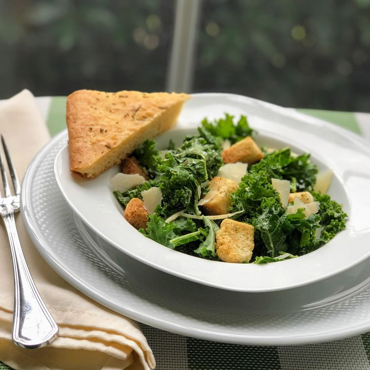

Kale Caeser Salad

Traditional Caesar salad that uses kale instead of romaine!
Ingredients:
- ½ cup mayonnaise
- 2 oil-packed anchovy fillets
- 1 teaspoon Dijon mustard
- 1 teaspoon Worcestershire sauce
- ½ teaspoon salt
- 2 tablespoons freshly grated Parmigiano-Reggiano cheese (Optional)
Instructions:
- Place mayonnaise, lemon juice, garlic, anchovies, Dijon mustard, Worcestershire sauce, salt, and pepper in the bowl of a food processor. Process until smooth. Transfer to a small bowl and stir in grated Parmigiano-Reggiano cheese. Set aside.
- Place kale in a large salad bowl. Using your hands, massage the kale to soften slightly. Add a few dollops of the dressing on top of the kale, and stir until all pieces are lightly coated with the dressing. Sprinkle with croutons and top with shaved Parmigiano-Reggiano cheese.